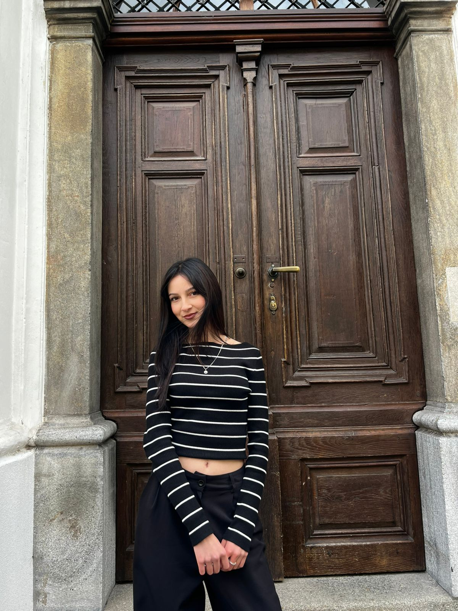

About Me
My name is Kozeta, and I am an Erasmus student currently studying Informatics at IMC University in Krems, Austria. I am a calm, organised, and friendly person who enjoys learning new skills and challenging myself academically. I love working on creative projects and always try to bring positive energy to the people around me. Studying abroad has helped me grow personally and academically, and I am excited for every new opportunity that comes my way.
Recent Updates
- Nov 2025: Working on my personal web project at IMC Krems 💻
- Oct 2025: Participated in Erasmus cultural events in Krems 🇦🇹
- Sep 2025: Completed a leadership workshop 🧠
"Creativity allows me to express who I am and explore new perspectives every day."